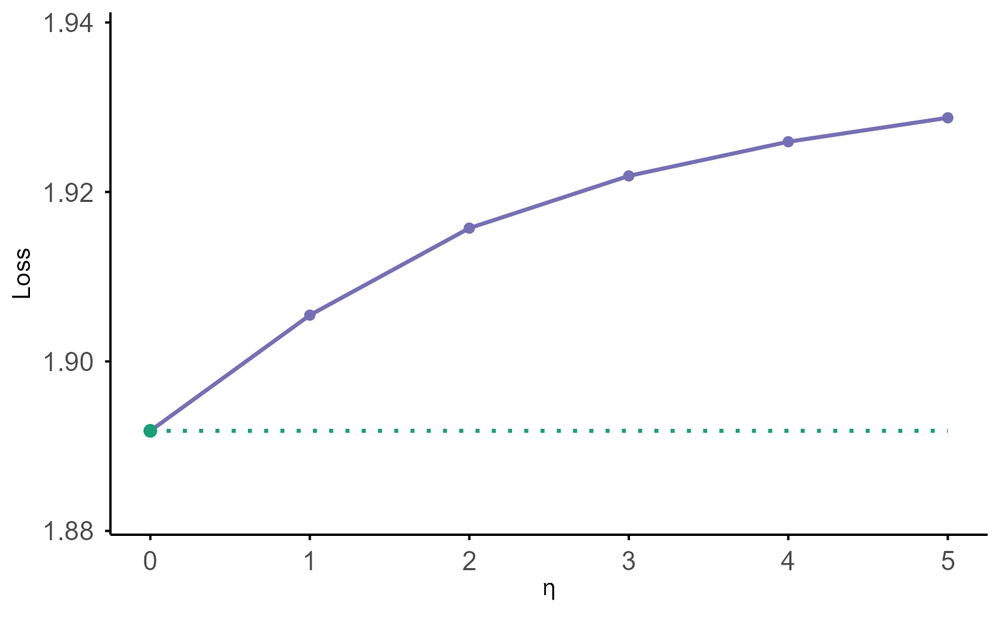

Plot Model Performance vs Eta for coxkl
plot.coxkl.RdPlots model performance across the eta sequence. Performance is either
loss (-2 times partial log-likelihood) or concordance index (C-index).
If no test data are provided, the curve is computed on the training data stored
in object$data.
Arguments
- object
A fitted model object of class
"coxkl".- test_z
Optional numeric matrix of test covariates.
- test_time
Optional numeric vector of test survival times.
- test_delta
Optional numeric vector of test event indicators.
- test_stratum
Optional vector of test stratum membership.
- criteria
Character string:
"loss"or"CIndex".- ...
Additional arguments (ignored).
Details
When criteria = "loss" and no test data are supplied, the plotted values are
(-2 * object$likelihood) / n, where n is the number of rows in the
(training) data. When test data are provided, performance is computed via
test_eval(..., criteria = "loss") and divided by the test sample size.
For criteria = "CIndex", performance is computed via
test_eval(..., criteria = "CIndex") on the chosen dataset. The plot adds a
dotted horizontal reference line at the value corresponding to eta = 0
(closest point on the eta grid).
Examples
data(Exampledata_lowdim)
#> Warning: data set 'Exampledata_lowdim' not found
train_dat_lowdim <- ExampleData_lowdim$train
beta_external_good_lowdim <- ExampleData_lowdim$beta_external_good
model <- coxkl(z = train_dat_lowdim$z,
delta = train_dat_lowdim$status,
time = train_dat_lowdim$time,
stratum = train_dat_lowdim$stratum,
RS = NULL,
beta = beta_external_good_lowdim,
etas = c(0:5))
plot(model)
#> Warning: Using `size` aesthetic for lines was deprecated in ggplot2 3.4.0.
#> ℹ Please use `linewidth` instead.
#> ℹ The deprecated feature was likely used in the survkl package.
#> Please report the issue to the authors.
